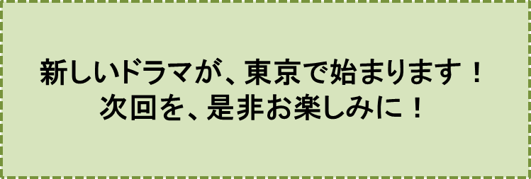

雨男の唄-PART1-
『出会い』の巻笠原正雄
3年前の、夏の日の、ことでした。
私は、奇妙な一通の葉書きを受け取りました。奇妙と思ったのも、無理はないでしょう、官製葉書きには違いないのですが、ずい分昔の時代のものらしく、現在の葉書きに比べ、一まわりも二まわりも小さい葉書きに、不足分の50円が、無造作にはられていたのですから。
この葉書きには、次のような文面がつづられていました。
“ジロー様へ
初めまして。天田（あまだ）と申します。この度、ジロー様にたってのお願いがございます。
ジロー様には、お忙しい毎日と存じますが、明後日の午後2時、お近くのフルーツ・コーヒーショップ「レインボー」にお越し下さいませんでしょうか。直ぐ分っていただけるよう、目印に大きな雨傘を持って参ります。ほんの30分ほど、お話をさせていただければ、とても有難いことです。
よろしく、お願いします。
8月3日
天田 潤”
えっ！ 目印に大きな雨傘を持ってくるって？！ 私は、思わず吹き出してしまいました。無理もないでしょう。干天続きの今の世の中、どこの家でも雨傘は、もはや無用の長物となって、家の片隅で、ほこりをかぶったままになっているからです。雨傘を持って歩く人など、日本全国、どこにもいないでしょう。
5月以来、6月、7月と、実に2ヶ月以上、一滴（ひとしずく）の雨も降っていませんでした。特に、関東地域の水不足はひどい状況でした。
6月頃から、“取水制限”、“時間給水”といった見出しが、新聞紙上を振わしていましたが、7月には、ミネラルウォーターの買い占め、ジュース類の極端な品不足などに加えて、買い占めによるのでしょうか、水分をたっぷり含んだ果物類の高騰などなどを伝える新聞記事、テレビのニュースが、連日のように、報じられました。
町の店頭に、たまに並んでいるスイカは、とても庶民の手に入る値段では、ありませんでした。
各地の水源池、ダムが、沼地のように、浅くなりました。関東にある幾つかのダム湖は、完全に干上がり、巨大な石畳のグラウンドとなってしまったダムの湖底では、何人かの祈祷師が、呪文を唱えながら、効能が必ず期待できるという、印度から取り寄せた古木の枯枝などを、焚いていました。
この様子を見に来た人々は、すっかり乾いた湖底から雲一つない青空に向って流れていく煙に、一縷の希望を寄せ、いつまでも眺めていました。
こんな記録的な干天続きの状況の中で、大きな雨傘を目印にレインボーにやってくるという未知の人、天田さん。一体どんな用事があるのだろう？
未知の人に会うという不安と共に、胸いっぱいに広がる好奇心を、押えることができませんでした。
大学受験に失敗して、浪人生活を迎えていた私に訪れた、最初の夏休みの日々。退屈な受験勉強に、うんざりしていた毎日を、過ごしていましたから明後日といわず、明日、いや今すぐにでも、用件の内容を聞きたいというわくわく気分で、約束の日時を待っていました。
この日が、とても待ち遠しかったのでしょう。徒歩で20分くらいの「レインボー」でしたけれど、私は、約束の時間の30分以上も前に自宅を後にしました。
真っ昼間、焼けつくようなアスファルト舗装に、日陰も街路樹もない、という商店街の道ですから、汗をかかないようにと、何も買うつもりのないスーパーで、冷やかしショッピングをして涼をとり、たっぷり時間をかけて歩きました。
こんなのろのろ歩きでも、「レインボー」には、10分近く時間を余して、着いたでしょう。お店の中はがらがらです。
無理もありません。こんな暑い日、しかも午後2時とあっては、木陰で休むか、家の中でごろ寝というのが最高なんですから。
アイスコーヒーを早速注文し、ゆっくり時間をかけて飲みながら、天田さんを待つことにしました。どんな用事があるか、楽しみです。
レインボーには、庭に面した大きな窓が沢山あって、好みの窓際に、いつも座ることができました。町の中としては珍しく広い庭で、緑の木々、カンナやヒマワリなどの花が、咲きほこっています。
記録的な干天続きの中でも、私の住んでいる京都では、水不足を感じませんでした。偏に、近畿の巨大な水がめ、琵琶湖の存在です。
おまけに1月～3月、北陸、近畿の山岳地帯は、今夏の天気を裏返したかのような状況で、連日の記録的大雪でした。
今夏の水不足を予想していたかのように、雪どけは、例年よりも遥かに遅く始まり、しかもゆっくりとしたペースで進みましたから、7月以降、琵琶湖には、溢れんばかりの水が貯えられていました。
このためでしょう。レインボーの窓越しに見える庭の草木も、朝夕、たっぷり水まきをしてもらって、緑の濃さが、真夏の太陽を受けて、一段と鮮やかに、そしてまぶしく、輝いています。
……しかし、午後2時、少し前でした。太陽の光がにわかに弱まったと思うと、次の瞬間、真っ黒な雷雲が、急速におおいはじめたのです。夕立！？と訝（いぶか）る暇もなく、稲妻が走り、雷鳴がとどろきました。猛烈な夕立です。
近くを歩いていた人達でしょう。若い二人づれの何カップルかが、レインボーに悲鳴を上げながら飛び込んできます。
滝の中をくぐり抜けてきたように、びしょ濡れです。広いお店の中は、たちまち満席の状況になりました。
時計の針がちょうど午後2時を指したときでした。背が高く、ひょろっとした感じの30代前半かな？ と思う人が、戸口に静かに立ちました。
大きな雨傘を高くかかげており、すぐに、天田さんであることが分かりました。傘からは雨水が、まだたっぷり、流れ落ちていたのでしょう。お店の入り口がびしょ濡れにならないよう、表通りに向け、盛んに傘を振りまわしていました。
入り口には雨傘用の傘立など、もはや用は無い、ということで片付けられていましたから、天田さんは、仕方なく、傘を折りたたんで手にしたまま、真っすぐ私のテーブルに向って近づいてきました。
……そして、はやる心を押えることができないというように、180センチ以上と思われる長身を折り曲げ、立ったままの姿勢で、テーブルに両手をガバッとつきました。
「あなたは、佐田さんをご存知ですね。あなたの高校時代のご友人、佐田さんをご存知ですね」
挨拶も抜きで、焦った口調の言葉を投げかけてきました。
私は、つとめて冷静に
「えー、よく知っていますよ。でも、それが、一体どうしたということ、なんですか」
と答えたと思います。
天田さんは、この言葉にすっかり安心したようでした。椅子にゆっくり腰を下ろし、色白の顔に、優しい笑みを浮かべながら
「佐田さんは、東京都知事の秘書さんですよね。この佐田さんに、お手紙を書いていただける人は、佐田さんの高校時代の親友である貴方、ジロー様が、ベストと考えているのです」
この言葉を遮るように、私は
「佐田君は秘書ではありません。人づてに聞いたところでは、秘書さんのお手伝いを、アルバイトでやっているということですよ。それに佐田君にとって、私は、全くの過去の人なんです」
と答えました。天田さんは無言です。
「……申し訳ありません。確かに、高校時代は親友でした。一番の親友だったでしょう。去年の夏休み、私達は、信州の民宿に泊まり込んで、机を並べて勉強し、お風呂にも一緒に入るほどの仲良しでした。けれど、大学受験の結果が、私達二人の仲を引き裂いてしまったのです。
彼は、東京の名門大学に一発合格。私は、近くの予備校に通う学生。それも、毎週実施されるテストをボイコットし、授業もさぼりがちの、落ちこぼれ学生です。
彼は、名門大学に通う将来性ある大学生、私は、受験戦争から脱落した学生です……。もう手紙をやり取りする仲では、ありません」
私は、寂しく笑いました。
天田さんは、少し間をおいて
「でも、私の申し上げる通りの手紙を、出してはいただけますね」
「えっ、どんな内容の手紙を出せと、おっしゃるのですか」
「関東地方の水不足は、このままでは、2週間後、8月20日頃に、東京都を中心に、関東地域に壊滅的状況をもたらすこととなるでしょう。ダムや河川、貯水池から、すっかり水が消え、水道の蛇口は、一滴の水ももたらさないでしょう。
少し余裕のある近畿地方や北海道から、給水車が毎日、何百台、何千台と押し寄せるでしょうが、相手は、1000万以上の人口を抱える東京都、文字通り焼け石に水でしょう」
なんという不吉なことを……。私は、そんなことを平然として語り続ける天田さんの顔を、あらためて眺めました。
端正な色白の顔には、喜怒哀楽はおろか、全くの無表情、何の感情も、感じとることができませんでした。
強いて言えば、山間（やまあい）に広がる、息を飲むほどに美しく、樹々の緑を鮮やかに映し出す湖面を、無念無想の心境で静かに眺めている、そんな表情です。
不吉な内容とは全く反対の印象でしか感じとれない、天田さんの顔を、私は、ぽっかり口をあけたまま眺めていました。
天田さんは続けました。
「この状況を救うため、8月16日に、私が東京に参ります。この日から、東京を中心に関東には、三日三晩、雨がもたらされることになるでしょう」
「えっ！」
と絶句する私に、畳み込むように、言葉を続けました。
「今申し上げた内容の手紙を、書いていただくだけでよいのです。しかも、念のため、前日の15日まで、毎日出していただきたいのです。関東地方の雨不足は、完全に解消されることになるでしょう」
青天の霹靂（へきれき）とも言うべき先ほどの稲妻、雷雨。びしょ濡れになったカップル達を尻目に、大きな雨傘を持ち、雨粒一つ浴びることもなくひっそり現れた天田さん。
その姿が脳裏に甦り、私はまるで催眠術にかかったかのように、大きく頷（うなづ）きました。何か、凄い力のある人なんだ……。私の強い確信です。
天田さんと別れてからの一週間、8月11日まで、封書の手紙を毎日出し続けました。文面は以下の通りです。
“佐田君へ
ジローです。ご無沙汰しています。今月16日に、私は、天田さんという知人と一緒に、上京します。この日から三日三晩、東京の水不足を完全に解消するに足る、十分な雨がもたらされることになるでしょう”
こんな内容の手紙を、私は毎日、機械的に出し続け、一方の天田さんは、午後2時になると、必ず、手紙を投函したか否かの確認をするために、電話をかけてきました。
しかし、12日の朝、突如大きな不安が私を襲いました。
“……佐田君からは何の応答もない。東京が、雨不足でこんなに困っているのに、ふざけた手紙、とんでもない手紙と、思っているかもしれない……”
手紙には目もくれず、ゴミ箱に投げ捨てている佐田君の姿を想像し、大きな不安とともに、その姿を何回も、思い浮かべました。
“ひょっとすると、こんな内容の手紙を、一方的に出し続けてくる行為は、ある種のストーカー行為であると考えて、警察や裁判所に訴えるかもしれない……”
大きな大きな不安が私を襲いました。
ポストに向う勇気を、私は、もはや持ち合わせていませんでした。
この日午後2時、天田さんから、いつもの確認電話がかかってきたとき、胸の内を率直に話し、このような行為をつづける意志は、今は、もう全くないことを伝えました。
天田さんは、電話の向こうで非常に落胆している様子で、しばし無言でした。ようやく気を取り直したのでしょう。
「ゴミ箱に投げ捨てる可能性は、ゼロではありませんね。とても心配です……。
ジローさん、申しわけありませんが、お近くの郵便局から、内容証明付きの封書を出して下さい」
内容証明付きだって！思いがけない指示に、戸惑っているのが読み取れたのか、天田さんは自信たっぷりの口調で
「万が一、ストーカー行為で、ジローさんが訴えられるようなことがあったら、私が、全責任を負うことを約束しましょう。信頼して下さい」
ここで、電話は、ぷっつり切れました。
あぁ、私は、またも言われる通りに、内容証明書付き手紙を出し続けることとなりました。
手紙を出すことによほど神経質になっていたためでしょう。東京都都庁御中で、連日同一の内容証明の手紙を出す……、不審な行為と思われないか……このことが、大きな不安となりました。
このため、私は、毎回別の郵便局を選んで、手紙を出し、怪しまれないようにしました。
約束の日の2日前、つまり14日の朝、天田さんから現金書留の郵便を受け取りました。8月16日午前8時39分京都駅発の「のぞみ306号」の乗車券と、8号車7番A席と記された指定席券が、入っていました。驚いたことに、この切符はグリーン席の切符です。
この電車に乗れというのかな？グリーン車に乗るなんて凄いことだなぁ、夢のようだなぁ……と切符を見ながら、いろいろ思いを巡らしていた時だったでしょう。天田さんから、電話がかかりました。
「以下のような内容の手紙を、今すぐ、内容証明付き速達で出して下さい。
“8月16日午前10時56分東京駅着の「のぞみ306号」に乗って、天田さんとともに上京します。
もしも見事に雨が降ったら、プラットホームまで迎えに来て下さい。
雨が降らなければ、申し訳ないですが、今までの手紙は全て棄却して下さい。
この手紙でもって、ストーカー行為のような不愉快な手紙から、君は解放されることとなるでしょう“
以上のような文面の手紙を直ぐ出して下さい」
こう言って電話は切れました。
私は、言われるままに行動しました。この手紙を出せば、10日間以上、私を悩まし続けてきた手紙書きから解放されることを、心の底から喜びました。
しかも、雨が降る降らないに関わらず、明後日には、生まれて初めてグリーン車に乗って、東京への“観光ツアー”と、しゃれ込むことが出来ます。私は、わくわく気分になりました。
京都駅の新幹線プラットホームに着いたとき、天田さんは、ベンチに腰をおろして、私を待っていました。あの大きな雨傘を肩にし、その先に、ショッピングバッグをぶら下げていました。ショッピングバッグには、三日分の下着などが、入っているに違いありません。
グリーン車に乗り込むと、天田さんは、目隠し用の黒いハンカチを取り出して、顔に乗せ、早速お休みでした。
私は、車窓に広がる、刈り入れ前の田んぼ、伊吹山の風景を、十分に堪能しました。
特に魅せられたのは、浜名湖、富士山でした。
雲一つない青空のためでしょう。浜名湖の水が、真夏の太陽を一杯に受けて、コバルトブルーに輝いている風景に、息を飲みました。
雲一つない夏空をバックにした秀峰富士の姿に、思わず手を合わせ、合掌しました。
霊峰富士は、細々（こまごま）とした幾つもの峰々を伴うこともなく、ただ一嶺、無限の神々しさを伴って、眼（まなこ）に飛び込んできます。
列車が熱海を定刻通りに通過した頃から、私の胸には、不安がよぎりはじめました。雲一つない青空、降雨の気配など全くないからです。
……しかし、小田原近くのトンネルを過ぎたときだったでしょう。列車がトンネルを走り抜けたとき、外の景色が一変していたのです。
まるで、滝の中に飛び込んだような状態でした。雨粒がミミズのような線を、無数に、休むことなく窓に描いており、外は全く見えなくなりました。
「天田さん、雨ですよ。凄い雨ですよ」
私は弾んだ声で叫びました。……しかし、天田さんはピクリとも動かず、すやすやと寝息をたてたままです。
時間雨量は、幸い、40ミリを超えていなかったのでしょう。列車は、滝の中を走っていると思われるほどの激しい降雨にも関わらず、順調に新横浜を通り、時間通りに東京駅に滑り込みました。
♪♪♪♪コーヒーブレイク♪♪♪♪
